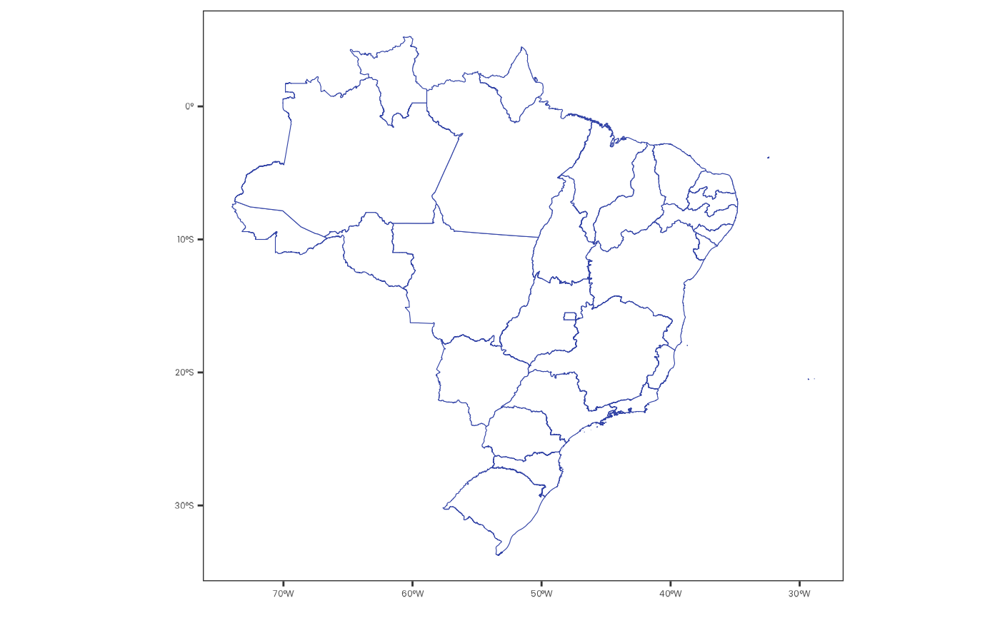

map_fill_data() prepares data to be used as fill in a map plot.
Usage
map_fill_data(
data,
col_fill = NULL,
col_ref,
name_col_value = "value",
name_col_ref = col_ref
)Arguments
- data
A
tibblewith the data to be used as fill.- col_fill
(optional) A
characterstring with the column name to be used as fill. IfNULL, the function will count the number of occurrences of each value incol_ref(default:NULL).- col_ref
A
characterstring with the column name to be used as reference.- name_col_value
(optional) A
characterstring with the name of the column to be used as value (default:"value").- name_col_ref
(optional) A
characterstring with the name of the column to be used as reference (default:col_ref).
Value
A tibble with two columns:
name_col_ref: with unique values fromcol_ref.name_col_value: with the values fromcol_fillor the count of occurrences of each value incol_ref(ifcol_fillisNULL).
See also
Other utility functions:
closest_geobr_year(),
fix_postal_code(),
remove_unique_outliers(),
test_geobr_connection(),
unique_outliers()
Examples
# Set the Environment -----
library(curl)
library(dplyr)
library(geodata)
#> Loading required package: terra
#> terra 1.8.70
#>
#> Attaching package: ‘terra’
#> The following objects are masked from ‘package:magrittr’:
#>
#> extract, inset
#> The following object is masked from ‘package:knitr’:
#>
#> spin
library(ggplot2)
library(terra)
library(tidyterra)
#>
#> Attaching package: ‘tidyterra’
#> The following object is masked from ‘package:stats’:
#>
#> filter
plot_vector_shape <- function(vector) {
plot <-
vector |>
ggplot() +
geom_spatvector(fill = "white", color = "#3243A6")
print(plot)
}
plot_vector_data <- function(data, vector) {
plot <-
data |>
ggplot() +
geom_spatvector(aes(fill = value), color = "white") +
scale_fill_continuous(
palette = c("#072359", "#3243A6", "#9483AF"),
na.value = "white"
) +
labs(fill = NULL)
print(plot)
}
# Define the Map -----
# \dontrun{
if (has_internet()) {
brazil_states_vector <- gadm("BRA", level = 1, path = tempdir())
}
# }
# Visualize the Map -----
# \dontrun{
if (has_internet()) {
brazil_states_vector |> plot_vector_shape()
}

# }
# Define the Data -----
# \dontrun{
if (has_internet()) {
data <- tibble(
state = sample(
brazil_states_vector$NAME_1, size = 1000, replace = TRUE
),
value = sample(1:1000, size = 1000, replace = TRUE)
)
data
}
#> # A tibble: 1,000 × 2
#> state value
#> <chr> <int>
#> 1 Bahia 45
#> 2 Rio Grande do Norte 224
#> 3 Sergipe 8
#> 4 Paraná 482
#> 5 Piauí 925
#> 6 Pernambuco 793
#> # ℹ 994 more rows
# }
# Create the Map Fill Data -----
# \dontrun{
if (has_internet()) {
data <- data |> map_fill_data(col_fill = "value", col_ref = "state")
data
}
#> ! There are duplicated values in state. value will be aggregated using the mean.
#> # A tibble: 27 × 2
#> state value
#> <chr> <dbl>
#> 1 Bahia 429
#> 2 Rio Grande do Norte 528
#> 3 Sergipe 537.
#> 4 Paraná 465.
#> 5 Piauí 583.
#> 6 Pernambuco 555.
#> # ℹ 21 more rows
# }
# Visualize the Map Fill Data -----
# \dontrun{
if (has_internet()) {
brazil_states_vector |>
left_join(data, by = c("NAME_1" = "state")) |>
plot_vector_data()
}
# }